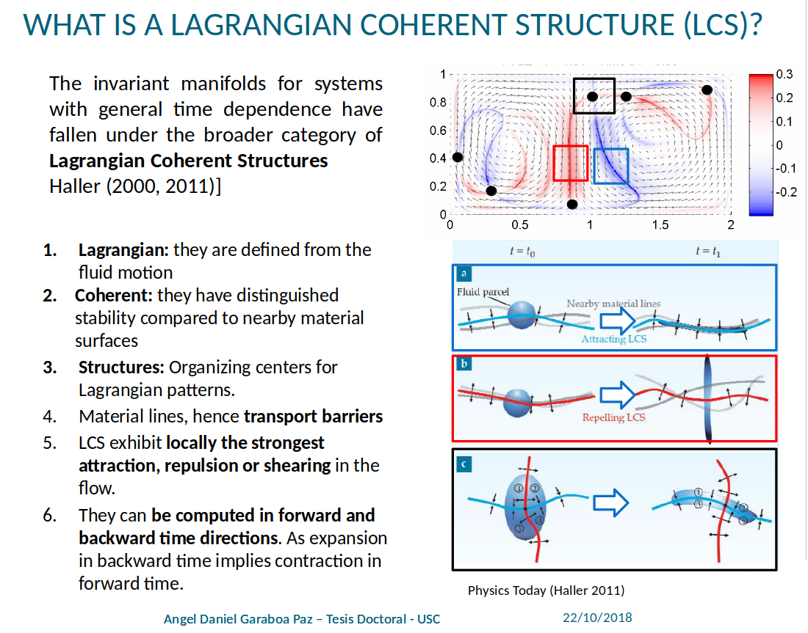

Theory¶
Introduction¶
In the last few years, many catastrophic events related to transport have grabbed the attention of the media. In March 2011, in Japan, due to at the Great Tohoku earthquake and the resultant tsunami Cs-137 radionucleids were released into the sea, exposing marine ecosystems to radioactive materials. Computer simulations and ocean drifters have measured the impact of the large scale ocean currents on the radionucleids, showing they are spread over the whole Pacific Ocean with very high concentrations at the source point, the Fukushima nuclear plant [b] [c] [d] . The waters surrounding the Fukushima nuclear plant are closed, and fishing or any other kind of marine activity is not allowed.
The general frame here is there is a free substance or a material in a given flow and to know which is its final destiny is a key problem to address, to prevent catastrophic consequences or at least try to be ahead of them [e]. The challenges are the number of degrees of freedom, non-linearity and chaotic behavior due to the sensitiveness to initial conditions. Thus, simulating all possible scenarios for a given event to obtain useful results turns into a overwhelming task. The simplification of transport understanding, extracting the key information and obtaining the template that organizes the motion is the concern of dynamic system theory. It focuses on the analysis of trajectories and the evolution rather than understanding the fluid dynamics from a physical point of view. The main goal is to locate or segregate these groups of trajectories according to their particular dynamics and hence allow the understanding of a destination for the substance or material transported.
FTLE¶
To detect these how these trajectories groups we will use the concept of hyperbolicity in an indirect way. We discretize the fluid domain with a dense grid of material points, measure the Lagrangian expansion rate (roughly “hyperbolicity”) about each material point, plot the spatial distribution, and extract surfaces that maximize the measure. This approach allows us to understand better the nature of the fluid, however, this notion of hyperbolicity opposite to steady systems must be associated to a specific time interval which is typical of finite-time analysis, so this behavior will depend on our ”horizon of knowledge”.
The FTLE at a given location measures the maximum stretching rate of an infinitesimal fluid parcel over the interval \([t_0 , t_0 + T]\) starting at the point \(r_0\) at time \(t_0\). The standard method to compute the FTLE field starts with the initialization of a grid of material points equally spaced in a structured grid at \(r0_{ij}\) at time \(t_0\).
This simplifies gradient computation and does not require a priory knowledge of the flow topology, which makes the discussion most broadly applicable. The initial locations of these points, as opposed to the final locations, represent the locations at which FTLE will be computed – the FTLE grid. Then, we using the particles trajectories given by the model soltuion for each material point for a finite time interval, \([t_0 ,t_0 + T ]\), we compute the numerical gradient of the flow map.
We use second order accurate central differences in the interior points and first order (forward or backwards) differences at the boundaries.

LCS¶
{kind=link}
The detection of LCS based on the FTLE ridge extraction introduced by Shadden et al. [a].
A ridge of FTLE is essentially a curve where it is locally maximized in the transverse direction, leading to a “second-derivative ridge” definition that required that a ridge was a curve (more generally, hypersurface in high dimensions), requiring the following conditions:
1. The first derivative of the FTLE field must be zero in the normal direction, \(\mathbf{n}·\nabla(FTLE) = 0\).
2. The second derivative of the field must be negative and minimum in the normal direction, \(ε_{min}(\nabla^2(FTLE)) < 0\), where \(ε_{min}\) is the minimum eigenvalue of \(\nabla^2(FTLE)\).
3. The largest FTLE \(μ_{max} = μ_1\) must be positive. There should be attraction within the surface and repulsion normal to it, \(μ_1 > 0 > μ_2\)